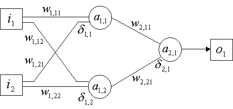

In this section, we'll be constructing a soundless instrument, which will merely help us consolidate our knowledge of the back-prop algorithm. We will be implementing a solution for the xor problem, using simply i-code and print isntructions to display the net's output.
Lets first consider the topology of the net we'll be needing. It will have two inputs, and a single output. The hidden layer size will be two cells, which is enough for solving this particular problem (so I've heard :)):

The picture also shows the variables we'll be needing to store values:
i [1], i [2]
The input pattern area
o [1]
The target pattern area
a [1][1], a [1][2]
Activation values for hidden layer
a [2][1]
Activation values for output layer
w [1][1][1], w [1][1][2], w [1][2][1],w [1][2][2]
Weight values for the input connections of hidden layer
w [2][1][1], w [2][2][1]
Weight values for input connections of output layer
d [1][1], d [1][2]
Delta for hidden layer
d [2][1]
Delta for output layer
Since this is a very small network, and to make things clear, I will use single variables for each of these values, isntead of some zak-space array. The nomenclature used for the variable names, will consist of the variable letter (A, W or D), followed by a number identifying the respective layer, followed by an underscore, followed by the indexes that identify each value within the layer.
Examples:
i_a1_2 will be the activation value of cell 2 in layer 1 (the hidden layer)
i_w2_21 will be the connection weight between cell 2 in layer 1 (the hidden layer) and cell 1 in layer 2 (the output layer)
i_i2 will be input value number 2
i_o1 will be the output (target) value
Lets inspect the code then. First the usual sr/kr definition (not relevant in this case since all is done is i-time processing)
sr = 44100
kr = 441
ksmps = 100
Next, the start of the instrument definition, where some parameters are defined.
The learning rate eta, which will determine the scaling factor by which weights are updated. Lets keep it low for now, but you may increase this value later (up to 1, and even 2 or 3), to see how the algorithm behaves (you wont be able to increase it much, before the algorithm starts diverging...).
ieta = .25 ;training coeficient
The number of patterns to be trained (since we'll be training a xor table, this corresponds to the four possible combinations of the two binary inputs)
inump = 4 ;number of patterns
for the exclusive-OR table:
And also the maximum number of iterations (in case the net diverges, this is a maximum value of epochs; if at this point the net hasnt found a solution, you might as well give up) :
imaxit = 50000 ;maximum number of iterations
This value is way overestimated. This particular implementation reaches the solution at 2490 iterations, within a 40% range. Its certainly not like we're making things hard for it... Maybe 10,000 iterations would be an ideal number, but sadly many solutions (when there are solutions) go past that.
Next the whole bunch of variables is initialized with zero (which wasnt really necessary, except for the weights which need be initialized, but serves as presentation for the nomenclature).
Just be sure to notice the weight array initialization. It seems best to initialize the weights with random values, which is whats being done here, with a value in the range 0 to 1 (1/100 to 100/100 to be precise).
;the activation array
i_a1_1 = 0
i_a1_2 = 0
i_a2_1 = 0
;the delta array
i_d1_1 = 0
i_d1_2 = 0
i_d2_1 = 0
;the weight array
i_w1_11 = (rnd(99)+1)/100
i_w1_12 = (rnd(99)+1)/100
i_w1_21 = (rnd(99)+1)/100
i_w1_22 = (rnd(99)+1)/100
i_w2_11 = (rnd(99)+1)/100
i_w2_21 = (rnd(99)+1)/100
;the input array
i_i1 = 0
i_i2 = 0
;the output array
i_o1 = 0
Now we'll start the iteration loop. The variable iter holds the present iteration number, and the loop restarts at the newitr: label.
;iteration loop
iter = 0
newitr:
This next variable ihit is used to determine if the solution has been reached. I start it with 1 in each iteration (in boolean style, a value of 'true'), and after each pattern training I turn it to 0 if the pattern is not correctly recognized. If I manage to still arrive with the value of 1 to the end of an iteration, it means all patterns were successfully recognized, and the net already found a solution.
ihit = 1
Inside the iteration loop, we have the pattern loop, which will, one by one, present each pattern pair to the net (all four of them for each epoch) and update the weights. Again a restart label newpat: is used for the looping:
ipat = 0
newpat:
For the actual training, we must start by loading the input/output variables with the pattern corresponding to the current pattern number. This is straight forward with the following code:
;load input/output patterns
if (ipat>0) igoto skp0
i_i1 = 0
i_i2 = 0
i_o1 = 0
igoto skp3
skp0:
if (ipat>1) igoto skp1
i_i1 = 0
i_i2 = 1
i_o1 = 1
igoto skp3
skp1:
if (ipat>2) igoto skp2
i_i1 = 1
i_i2 = 0
i_o1 = 1
igoto skp3
skp2:
if (ipat>3) igoto skp3
i_i1 = 1
i_i2 = 1
i_o1 = 0
skp3:
Then the output of the net is calculated, layer by layer, form the input to the output (the temporary variable inet). For each cell, we first multiply each weight by the stimulus through that particular weight and add the combined result. Then, the activation amount is updated using the formula for the logistic function:
;activation of neuron 1 from layer 1
inet = i_i1*i_w1_11+i_i2*i_w1_21
i_a1_1 = 1/(1+exp(-inet)))
;activation of neuron 2 from layer 1
inet = i_i1*i_w1_12+i_i2*i_w1_22
i_a1_2 = 1/(1+exp(-inet)))
Once all neurons in the first layer have been computed, proceed with next layer:
;activation of neuron 1 from layer 2
inet = i_a1_1*i_w2_11+i_a1_2*i_w2_21
i_a2_1 = 1/(1+exp(-inet)))
At this point, we have our output neuron (i_a2_1) firing the output of the net, for the pattern that is being trained (i_i1 and i_i2). What we want to do is display the result, so that we can see the net evolving, during the instrument's execution. This is done simply with a print instruction (notice the variable itimes, the number of iterations to go by before printing, since we dont need to see the results at every single iteration):
;print output of the net
itimes = 100; every 100 times
if (frac(iter/itimes)!=0) igoto prskp
print iter, ipat, i_i1, i_i2, i_a2_1
prskp:
And we must check if the net has found the solution. The irange variable holds the error percentage that we'll be allowing. Since we're dealing with binary patterns, we may find that a value above .6 is already a sufficient approximation to 1, a goal which wont demand as many iterations, as to get within, say, 10% of the result. You may later try smaller values for irange, to realize for yourself the number of required iterations.
If the distance between the actual and desired output is less than the maximum error percentage, then it means the pattern was successfully recognized. Otherwise zero ihit, so that the program knows training isnt over yet.
;check if output within range
irange = .4
idst = abs(i_a2_1-i_o1)
if (idst<irange) igoto yes
ihit = 0; no
yes:
If this was the last pattern, and the ihit value is still 1 (meaning all patterns were within the specified range from the target), then we can stop training, since we already found a solution
if (ipat<3) igoto sk1
if (ihit==1) igoto done
sk1:
Otherwise, lets correct the weights using the back-propagation rule:
First lets find delta for the output layer. This will consist of the difference between the actual and desired outputs, multiplied by the derivative of the activation function, out*(1-out), where out is the activation level of the neuron.
;find delta for output layer
i_d2_1 = (i_o1-i_a2_1)*(i_a2_1*(1-i_a2_1))
Then, lets backpropagate this delta to the hidden layer. The back propagated amount is stored in ibp, and as you see it consists of the found delta for the output layer, times the respective connection weights to each cell in the hidden layer. This backpropagated value, is then multiplied by the activation function derivative, as before:
;delta for cell 1
ibp = i_d2_1*i_w2_11
i_d1_1 = ibp*(i_a1_1*(1-i_a1_1))
;delta for cell 2
ibp = i_d2_1*i_w2_21
i_d1_2 = ibp*(i_a1_2*(1-i_a1_2))
We're finally able to correct all the connection weights, based on the just found deltas. For each connection, the change in weight value equals the connection's input activation (activation level of the cell on the input of the connection), times the delta value for the cell on the output of the connection, times the learning rate eta.
Heres the code for the four connections of the hidden layer, plus the two connections of the output layer:
;layer 1 connections
i_w1_11 = i_w1_11+ieta*i_d1_1*i_i1
i_w1_12 = i_w1_12+ieta*i_d1_2*i_i1
i_w1_21 = i_w1_21+ieta*i_d1_1*i_i2
i_w1_22 = i_w1_22+ieta*i_d1_2*i_i2
;layer 2 connections
i_w2_11 = i_w2_11+ieta*i_d2_1*i_a1_1
i_w2_21 = i_w2_21+ieta*i_d2_1*i_a1_2
At this point, we've trained one pattern, and should proceed with the next one. Thats whats done by
ipat = ipat+1
if (ipat<inump) igoto newpat
After all four patterns have been used, it looks like we ended an iteration cycle. So lets just increment the iteration counter, and loop to the next epoch (unless the maximum number of iterations was reached, which means the net diverged)
iter = iter+1
if (iter<imaxit) igoto newitr
If eventually the net manages to successfully recognize all four patterns during an iteration, this is where program control will be transferred to:
done:
All we have to do now, is print the number of iterations, and the result solution. This solution will consist simply of the weight values, that you can use to check for ourselves, they in fact solve the problem
;print down results
print iter
print i_w1_11
print i_w1_12
print i_w1_21
print i_w1_22
print i_w2_11
print i_w2_21
And thats all (no sound on this one, sorry :))
endin
Here's the complete orchestra file : BPXOR.ORC
The score just needs to call the instrument with whatever duration. You can still just use this DUMMY.SCO.
Previous : Hidden layer training (back-propagation)
Up: Back to index